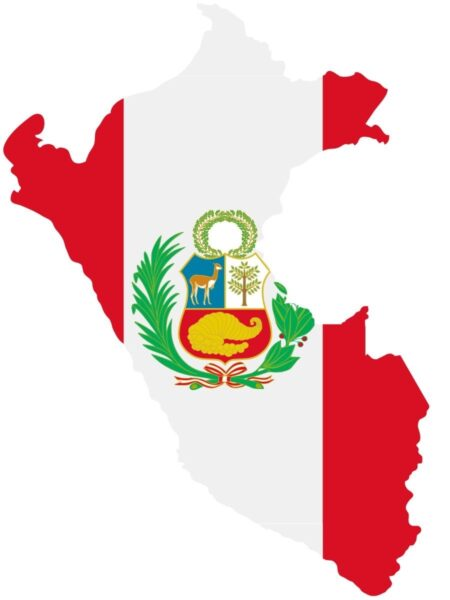

Peru, a Land of Wonder:

Peru is a country located in the west coast of South America, known for its trove of beautiful sights, rich history, and vibrant culture. It is a country that has captivated the imaginations of travelers and scholars alike for centuries. From the ancient ruins of Machu Picchu to the breathtaking landscapes of the Cordillera Huayhuash and Parque Nacional Huascarán, Peru offers a diverse range of experiences for those who seek to explore its wonders. The country's rich cultural heritage is reflected in its music, dance, and cuisine, making it a destination that appeals to all the senses. Whether you are an adventurer seeking to trek through the Andes or a history enthusiast eager to learn about the Inca civilization, Peru has something to offer everyone.Jim Bartle and Peru:
It is this beuty and richness of Peru that captivated my father, Jim Bartle, to stay in Peru and write about it. Originally, he came to Peru 1977 to go hiking and to improve his spanish. However, after completing several hikes in the cordillera blanca with very little information about the trails available, he decided to stay and write the trails guides himself, thus, starting his career as a writer and photographer.
Works and Publications
Over the last 46 years, Jim Bartle has published several books about Peru:
-
Trails of the Cordillera Blanca & Huayhuash
First published in 1980, his first book "Trails of the Cordillera blanca & Huayhuash in Peru" is a comprehensive guidebook of the trails of the Cordillera Blanca and Huayhuash mountain ranges.
-
Parque Nacional Huascaran
Published in 1985, his second book "Parque Nacional Huascaran" is a photobook compromised by pictures of the Cordillera Blanca he took himself over his many hikes to the park.
-
Machu Pichu Historical Sanctuary
Published in 1995, he co-authored "Machu Pichu Historical Sanctuary" with Peter Frost. The book is a photobook, which consists of a collection of pictures of the Machu Pichu Historical Sancturary and the surrounding area, with descriptions of the history and culture of the region.
-
Cordillera Huayhuash
Published in 1998, he co-authored "Cordillera Huayhuash" with Adam Kolff. The book is a photobook which was made with with the support of the Mountain Institute, a conservation organization based in washington, D.C, who were active in Peru at the time and wanted to promote the conservation of the Cordillera Huayhuash and the surrounding area, actively working to have it included in Peru's national Protected Areas System SINANPE. The book consists of a collection of pictures of the Cordillera Huayhuash and surrounding area.
-
Peru in Images
Published in 2011, his fifth book, "Peru in Images", is a photobook of all Peru, which included photographs of over 30 different photographers, including his own. This book uses a different format than his previous books, being about 50% taller and with over 200 pages long. The book is a collection of photos from all over Peru, which include work from twenty-two different photographers, including accomplished photographers of Peru in general as well as several outstanding international photographers.
-
Mountains of the Cordillera Huayhuash & Mountains of the Cordillera Blanca
Published in 2026, his sixth and seventh books, "Mountains of the Cordillera Huayhuash" & "Mountains of the Cordillera Blanca" are also photobooks, but, that were specifically designed and made to be much smaller(compact) and affordable than his previous books. Both books focus on a particullar mountain range and are printed in black and white, rather than in full color. This was done in order to make them more affordable, unique and accessible to a wider audience. The mountain ranges depicted are mostly white, grey and black, so the black and white format does not lower the quality of the work.
Compact Book table & Links
| Book Title | Year Published | Author(s) | Book cover |
|---|---|---|---|
| Trails of the Cordillera Blanca & Huayhuash | 1980 | Jim Bartle | |
| Parque Nacional Huascaran | 1985 | Jim Bartle | |
| Machu Pichu Historical Sanctuary | 1995 | Jim Bartle & Peter Frost | |
| Cordillera Huayhuash | 1998 | Jim Bartle & Adam Kolff | |
| Peru in Images | 2011 | Jim Bartle | |
| Mountains of the Cordillera Huayhuash | 2026 | Jim Bartle | |
| Mountains of the Cordillera Blanca | 2026 | Jim Bartle |